from IPython.display import clear_output
!pip install -U pandas_datareader
!pip install plotly
!pip install matplotlib==3.1.3
clear_output()
[CA]: Time Series #2 - Predicting Stock Prices (Time Series) using classical Machine Learning
CA=Competence Afternoon
To learn more about Time Series and how one can analyze them please view the other parts,
- Part One - Decomposing & Working with Time Series (theoretical) (
 )
) - Part Two - Predicting Stock Prices (Time Series) using classical Machine Learning ()
- Part Three -Forecasting Cryptocurrency Prices (Time Series) using Deep Learning (PyTorch, Tensorflow/Keras & darts) ()
Predicting Time Series 📈
Today we will move from learning how to analyze Time Series to actually predicting them using simple models and data.
We’ll be predicting Stocks from the top tech companies like Apple & Google.
In part #3 we’ll move back to the crypto world!
To be able to predict the data we must understand it and we’ll make a minor analysis.
Installation & Imports
Feel free to ignore the cells and simply run them, the lazy style 🥱
Installing the important libraries…
And importing them…
import pandas as pd # data processing, CSV file I/O (e.g. pd.read_csv)
import numpy as np # linear algebra
import pandas_datareader as pdr
import seaborn as sns
from datetime import datetimeMinor Analysis
df = pdr.get_data_yahoo(['AAPL', 'GOOGL', 'AMZN', 'MSFT', 'GE'])
df.head()| Attributes | Adj Close | Close | ... | Open | Volume | ||||||||||||||||
|---|---|---|---|---|---|---|---|---|---|---|---|---|---|---|---|---|---|---|---|---|---|
| Symbols | AAPL | GOOGL | AMZN | MSFT | GE | AAPL | GOOGL | AMZN | MSFT | GE | ... | AAPL | GOOGL | AMZN | MSFT | GE | AAPL | GOOGL | AMZN | MSFT | GE |
| Date | |||||||||||||||||||||
| 2017-03-13 | 32.856758 | 864.580017 | 854.590027 | 60.405796 | 214.961868 | 34.799999 | 864.580017 | 854.590027 | 64.709999 | 229.692307 | ... | 34.712502 | 860.830017 | 851.770020 | 65.010002 | 232.538467 | 69686800.0 | 1166600.0 | 1909700.0 | 20100000.0 | 3924414.0 |
| 2017-03-14 | 32.807198 | 865.909973 | 852.530029 | 60.125748 | 212.658188 | 34.747501 | 865.909973 | 852.530029 | 64.410004 | 227.230774 | ... | 34.825001 | 863.750000 | 853.549988 | 64.529999 | 228.923080 | 61236400.0 | 1061700.0 | 2130600.0 | 14280200.0 | 2964208.0 |
| 2017-03-15 | 33.154182 | 868.390015 | 852.969971 | 60.443142 | 214.241943 | 35.115002 | 868.390015 | 852.969971 | 64.750000 | 228.923080 | ... | 34.852501 | 867.940002 | 854.330017 | 64.550003 | 227.307693 | 102767200.0 | 1332900.0 | 2562200.0 | 24833800.0 | 3268564.0 |
| 2017-03-16 | 33.208458 | 870.000000 | 853.419983 | 60.340446 | 214.169952 | 35.172501 | 870.000000 | 853.419983 | 64.639999 | 228.846161 | ... | 35.180000 | 870.530029 | 855.299988 | 64.750000 | 229.230774 | 76928000.0 | 1104500.0 | 1842300.0 | 20674300.0 | 2756910.0 |
| 2017-03-17 | 33.043243 | 872.369995 | 852.309998 | 60.555161 | 215.105865 | 34.997501 | 872.369995 | 852.309998 | 64.870003 | 229.846161 | ... | 35.250000 | 873.679993 | 853.489990 | 64.910004 | 229.615387 | 175540000.0 | 1868300.0 | 3384400.0 | 49219700.0 | 5673070.0 |
5 rows × 30 columns
Looks fine, but how much data did we download?
We can view the .index which is a DateTimeIndex and figure out how it stretches.
df.index[0],df.index[-1](Timestamp('2017-03-13 00:00:00'), Timestamp('2022-03-11 00:00:00'))Hmm, 5 years, that should be enough to find some kind of patterns.
Now let us analyze this data further by looking at if the stocks correlate somehow! 🤠
N.B. this analysis was first done by Heidi Mach, it’s something I would never have done myself. Really cool results incoming!
df['Adj Close'].corr().style.background_gradient(cmap="Blues")| Symbols | AAPL | GOOGL | AMZN | MSFT | GE |
|---|---|---|---|---|---|
| Symbols | |||||
| AAPL | 1.000000 | 0.951499 | 0.935116 | 0.978268 | -0.283789 |
| GOOGL | 0.951499 | 1.000000 | 0.866575 | 0.960291 | -0.192826 |
| AMZN | 0.935116 | 0.866575 | 1.000000 | 0.944313 | -0.499768 |
| MSFT | 0.978268 | 0.960291 | 0.944313 | 1.000000 | -0.374930 |
| GE | -0.283789 | -0.192826 | -0.499768 | -0.374930 | 1.000000 |
Holy macaron, that’s a lot more correlated data than I expected! 🙀
The seaborn library has a function called pairplot which plots this correlation, but using the points which is visually interesting in comparison to simply seeing the table above.
df = df['Adj Close']
df = df.drop(columns="GE")sns.pairplot(df)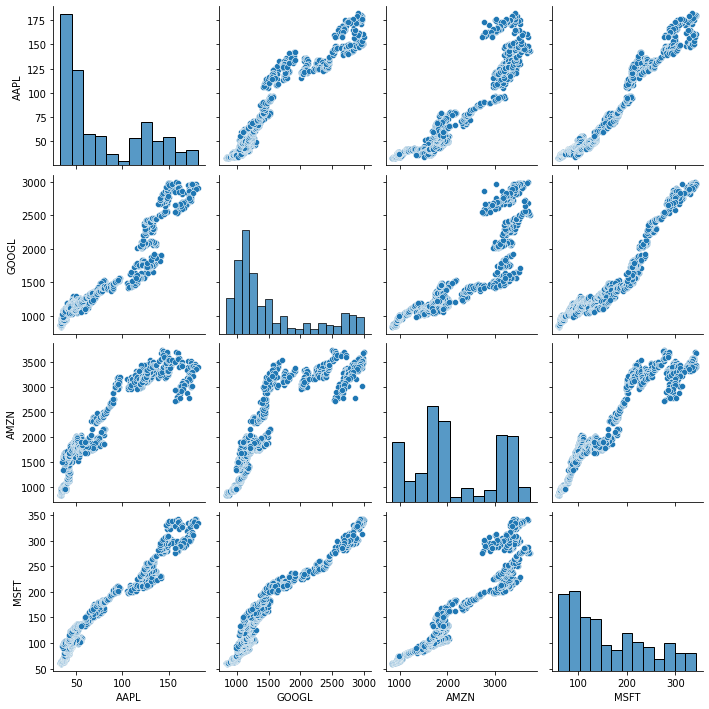
Does this in fact mean what that we can predict prices of a stock based on their competition? The correlation does suggest so.
Let’s try it!
First we’ll try using a LinearRegression which simply said fits a line to be as close to all points as possible.
 > Source: Wikipedia.org
> Source: Wikipedia.org
First we import LinearRegression through scikit-learn and then we add train_test_split which allows us to split our data into a training and testing dataset.
Whenever you test your Machine Learning or Deep Learning Models you never want to test it on data that it has trained on, as you might’ve overfitted the data and have a really good result until you see new data points.
The end-goal of a model is to generalize a problem and find the local minima which optimizes the funtion for the data points. By only looking at the same data we can’t be sure we generalized correctly.
And the code 👩💻
from sklearn.linear_model import LinearRegression
from sklearn.model_selection import train_test_split
from sklearn.metrics import r2_score, mean_absolute_error
non_google_df = df.drop(columns="GOOGL")
X_train, X_valid, y_train, y_valid = train_test_split(non_google_df, df['GOOGL'], test_size=0.2)
clf = LinearRegression()We got our data divided into valid and train, we got a regression model in our clf.
Let us predict the data and view our r2_score and mean_absolute_error.
💡
r2_score: (coefficient of determination) regression score function.
Best possible score is 1.0 and it can be negative (because the model can be arbitrarily worse). A constant model that always predicts the expected value of y, disregarding the input features, would get a score of 0.0.mean_absolute_error: Mean absolute error regression loss.
clf.fit(X_train, y_train)
preds = clf.predict(X_valid)
r2_score(y_valid, preds), mean_absolute_error(y_valid, preds)(0.9495278677136834, 120.88640110098741)\(R^2 = 93 \%\) 🥳
That’s actually not bad at all, the mean_absolute_error being 129.7 is not very telling. Either we have to view the data to understand the magnituide, or we can apply MAPE which is the Mean Absolute Percentage Error.
Not sure if I’m lazy or simply want to show you the other function 🤔, but I’ll use MAPE!
from sklearn.metrics import mean_absolute_percentage_error
mean_absolute_percentage_error(y_valid, preds)0.07891126366405354\(< 9\%\)
Pretty acceptable considering we have not done anything except deliver data to one of the simplest models that exists!
Let’s show this visually!
import plotly.express as px
px.line(y=[y_valid, preds])Show Plotly Chart (code cell only visible in active notebook)
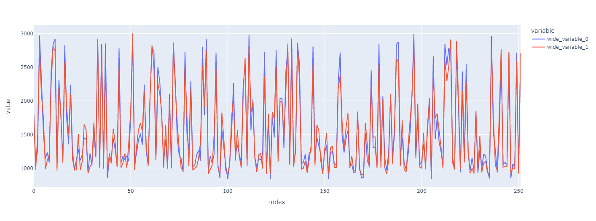Looks pretty good, but it is very messy… Something is off right?
The index is not a DateTimeIndex anymore because we shuffled the data in train_test_split – a big difference is thereby applied.
y_valid.plot()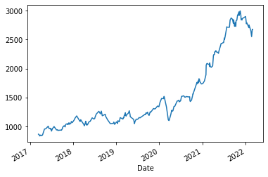
y_valid.plot(legend="Valid")
pd.Series(preds, index=y_valid.index).plot(legend="Pred")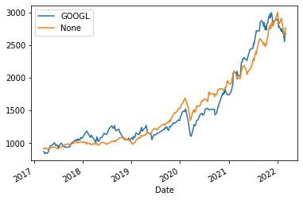
Looks pretty fly, but can we take it further?
…yes we can! 😎
I see a few options, the two first being:
- Scaling the data as errors at the end are larger than in the beggining based on stocks rising.
LinearRegressionis a very simple yet efficient model that we can try to replace.
Let’s start with the second point, scikit-learn has a multitude of regression-models, one being RandomForestRegressor that’s pretty strong.
from sklearn.ensemble import RandomForestRegressor
clf = RandomForestRegressor()
clf.fit(X_train, y_train)
preds = clf.predict(X_valid)
r2_score(y_valid, preds), mean_absolute_percentage_error(y_valid, preds)(0.9963567300739637, 0.016329169939121136)😲\(R^2 >99\%\)
That’s actually crazy. And MAPE is not even 2%.
Let’s view it!
y_valid.plot(legend="Valid")
pd.Series(preds, index=y_valid.index).plot(legend="Pred")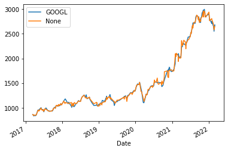
That’s an incredibly fitted curve.
How is this possible?
1. We most likely overfit the data.
2. We are looking at AMZN, AAPL and more data that is highly correlated during the same day as the one we wish to predict. - In the end this is a useless task, if we know the prices of today we’d also know GOOGL’s prices! 3. We’re using shuffled data, meaning that in a way we’ve seen the future and past values surrounding the predicted one. This is a regression problem and not really a forecasting problem, which is simpler than forecasting.
Impressive nontheless
Even as I’m aware of all the drawbacks I’m thouroughly impresed by the results we’re seeing.
Making it more interesting
We should make use of the previous days data to make sure we are not “cheating”.
Let’s get on it! 🎯
We’ll be able to move, or shift, the data using ˋpd.DataFrame.shiftˋ which shifts the data either forwad (\(+X\)) or backwards (\(-X\)).
And while we’re at it, let’s group this up into a function.
ℹ️
pd.DataFrame.shift: Shift index by desired number of periods with an optional time freq.
def fit_validate_plot(X_train, X_valid, y_train, y_valid):
clf = RandomForestRegressor()
clf.fit(X_train, y_train)
preds = clf.predict(X_valid)
pd.DataFrame({'Valid': y_valid, 'Preds': preds}, index=y_valid.index).plot()
print(f"""
$R^2$: {r2_score(y_valid, preds)}
MAPE: {mean_absolute_percentage_error(y_valid, preds)}
MAE: {mean_absolute_error(y_valid, preds)}
""")And making use of it will now be easy! 😍
Refactoring and abstractions are incredibly important.
X_train, X_valid, y_train, y_valid = train_test_split(df.drop(columns="GOOGL").shift(1).iloc[1:], df['GOOGL'].iloc[1:], test_size=0.2)
fit_validate_plot(X_train, X_valid, y_train, y_valid)
$R^2$: 0.993020486528333
MAPE: 0.022105878493046974
MAE: 32.473562898181726
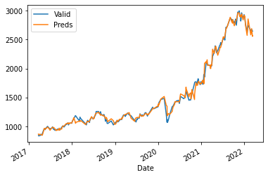
🤯 this is crazy impressive!
We made the task at hands legit by only using historical data of GOOGL’s competitors. The \(R^2\) and MAPE is incredible.
It’d be interesting to investigate how badly we overfit the data, but that’s for another day.
And how about if we don’t shuffle the data? E.g. we do an actual forecast and not regression!
X_train, X_valid, y_train, y_valid = train_test_split(df.drop(columns="GOOGL").shift(1).iloc[1:], df['GOOGL'].iloc[1:], test_size=0.2, shuffle=False)
fit_validate_plot(X_train, X_valid, y_train, y_valid)
$R^2$: -7.266054917956771
MAPE: 0.24703039286319634
MAE: 675.8480126274956
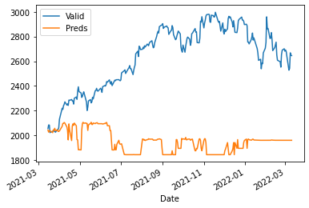
🤯😭
What are we seeing and why?
Regression algorithms/models try to fit a line to multiple points and it should be able to guess what point the data has depending on its features. In our case the regression algorithm has never seen data as high as above y_train.max(), which means it can’t guess the data.
Don’t trust me? Simply validate by looking at the chart 👆.

What’s one way to fix this? Scaling
How will we try to achieve this practically? LogReturn
💡 You can also take the %-difference, which according to Taylors Theorem will approximate the LogReturn.
def log_return(x: pd.DataFrame) -> pd.DataFrame:
return x.apply(lambda x: np.log(x/x.shift(1))).dropna()
log_return(df).head()| Symbols | AAPL | GOOGL | AMZN | MSFT |
|---|---|---|---|---|
| Date | ||||
| 2017-03-14 | -0.001510 | 0.001537 | -0.002413 | -0.004647 |
| 2017-03-15 | 0.010521 | 0.002860 | 0.000516 | 0.005265 |
| 2017-03-16 | 0.001636 | 0.001852 | 0.000527 | -0.001700 |
| 2017-03-17 | -0.004987 | 0.002720 | -0.001301 | 0.003552 |
| 2017-03-20 | 0.010446 | -0.005126 | 0.005453 | 0.000925 |
df_lr = log_return(df)
X_train, X_valid, y_train, y_valid = train_test_split(df_lr.drop(columns="GOOGL").shift(1).iloc[1:], df_lr['GOOGL'].iloc[1:], test_size=0.2, shuffle=False)
fit_validate_plot(X_train, X_valid, y_train, y_valid)
$R^2$: -0.13772674709610588
MAPE: 3.1419364874467086
MAE: 0.01222694796828883
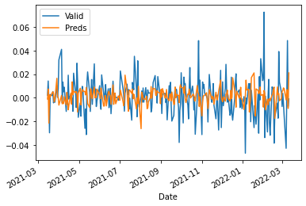
Most certainly not perfect… Forecasting seems harder than expected based on our initial results…
And that’s really because we weren’t forecasting before, we were solving a regression-problem
Perhaps we need to use more data than simply the previous day?
Predicting Based on historical performance
We might predict based on historical performance.
df.head()| Symbols | AAPL | GOOGL | AMZN | MSFT |
|---|---|---|---|---|
| Date | ||||
| 2017-03-13 | 32.856758 | 864.580017 | 854.590027 | 60.405796 |
| 2017-03-14 | 32.807198 | 865.909973 | 852.530029 | 60.125748 |
| 2017-03-15 | 33.154182 | 868.390015 | 852.969971 | 60.443142 |
| 2017-03-16 | 33.208458 | 870.000000 | 853.419983 | 60.340446 |
| 2017-03-17 | 33.043243 | 872.369995 | 852.309998 | 60.555161 |
df = df[['GOOGL']]
df.head()| Symbols | GOOGL |
|---|---|
| Date | |
| 2017-03-13 | 864.580017 |
| 2017-03-14 | 865.909973 |
| 2017-03-15 | 868.390015 |
| 2017-03-16 | 870.000000 |
| 2017-03-17 | 872.369995 |
✅ Only Google Data
❌ Historical Data
So what should we do? One way to solve this is to use shift multiple times.
def build_history(df: pd.DataFrame, num_back: int) -> pd.DataFrame:
for i in range(num_back):
df.loc[:, f"t_{i}"] = df['GOOGL'].shift(i + 1)
return df
build_history(df, 3).head()/usr/local/lib/python3.7/dist-packages/pandas/core/indexing.py:1667: SettingWithCopyWarning:
A value is trying to be set on a copy of a slice from a DataFrame.
Try using .loc[row_indexer,col_indexer] = value instead
See the caveats in the documentation: https://pandas.pydata.org/pandas-docs/stable/user_guide/indexing.html#returning-a-view-versus-a-copy
| Symbols | GOOGL | t_0 | t_1 | t_2 |
|---|---|---|---|---|
| Date | ||||
| 2017-03-13 | 864.580017 | NaN | NaN | NaN |
| 2017-03-14 | 865.909973 | 864.580017 | NaN | NaN |
| 2017-03-15 | 868.390015 | 865.909973 | 864.580017 | NaN |
| 2017-03-16 | 870.000000 | 868.390015 | 865.909973 | 864.580017 |
| 2017-03-17 | 872.369995 | 870.000000 | 868.390015 | 865.909973 |
Notice how \(t_0\) is the previous value, \(t_1\) two steps back, and so on.
This is actually very memory intense as our data grows X times, one time per time step we build. In part #3 we’ll go through how one can solve this issue.
No we need to drop all places where we don’t have any history. That is easily achieved by dropping NaN.
ℹ️
pd.DataFrame.dropna: Remove missing values.
axisattribute tells if you wish to drop rows or columns based onNaN, default is row.
df = build_history(df, 7)
df = df.dropna()
df.head()| Symbols | GOOGL | t_0 | t_1 | t_2 | t_3 | t_4 | t_5 | t_6 |
|---|---|---|---|---|---|---|---|---|
| Date | ||||||||
| 2017-03-22 | 849.799988 | 850.140015 | 867.909973 | 872.369995 | 870.000000 | 868.390015 | 865.909973 | 864.580017 |
| 2017-03-23 | 839.650024 | 849.799988 | 850.140015 | 867.909973 | 872.369995 | 870.000000 | 868.390015 | 865.909973 |
| 2017-03-24 | 835.140015 | 839.650024 | 849.799988 | 850.140015 | 867.909973 | 872.369995 | 870.000000 | 868.390015 |
| 2017-03-27 | 838.510010 | 835.140015 | 839.650024 | 849.799988 | 850.140015 | 867.909973 | 872.369995 | 870.000000 |
| 2017-03-28 | 840.630005 | 838.510010 | 835.140015 | 839.650024 | 849.799988 | 850.140015 | 867.909973 | 872.369995 |
LGTM ✅
Let’s scale our data and then make predictions.
As previously,
- Scale data
- Split data
- Fit data
- Predict data
- Validate
df_lr = log_return(df)
X_train, X_valid, y_train, y_valid = train_test_split(df_lr.iloc[:, 1:], df_lr['GOOGL'], test_size=0.2, shuffle=False)
fit_validate_plot(X_train, X_valid, y_train, y_valid)
$R^2$: -0.12436497765470134
MAPE: 2.020486730297106
MAE: 0.011961155812517109
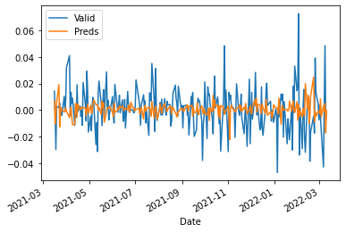
Not great, not awful. Some self-exercises:
- How would we do without scaling?
- How would we do without shuffling?
- Any other ideas? Try ’em out!
# Test your own ideasIf you didn’t try previously, try appling a rolling mean and rerun fit_validate_plot as this should reduce the “swings” and thereby be a little bit more predictable.
💡
pd.DataFrame.Rolling: Provide rolling window calculations.
In other words: We slide a window on our data and do calculations, in our casemean. This window includeswindow,min_periods,center& more attributes which impacts size of window, how large minimal window can be, and more.
Validating what rolling.mean() does to our data:
df['GOOGL_ROLLING'] = df['GOOGL'].rolling(3).mean() # Rolling over 3 days mean
df[-100:].plot(y=['GOOGL', 'GOOGL_ROLLING'])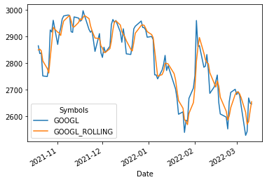
Zooming 🔍
df_last_months = df[df.index > datetime(2021, 6, 6)]
df_last_months.plot(y=['GOOGL', 'GOOGL_ROLLING'], backend='plotly')Show Plotly Chart (code cell only visible in active notebook)
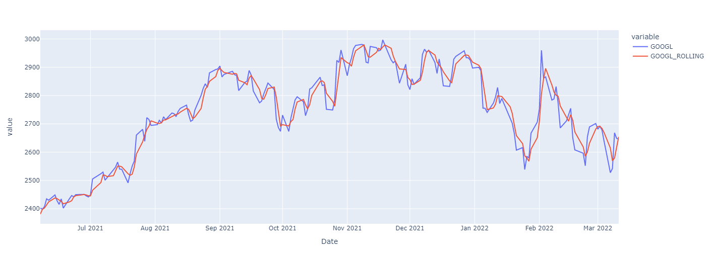The curve is very similar, but different.
Self-exercise: Test applying different functions like
min,maxand expanding window size into more days.
And validating what this does to our prediction.
df_lr = df.pct_change().dropna().rolling(3).mean().dropna()
X_train, X_valid, y_train, y_valid = train_test_split(df_lr.iloc[:, 1:], df_lr['GOOGL'], test_size=0.2, shuffle=False)
fit_validate_plot(X_train, X_valid, y_train, y_valid)
$R^2$: 0.8925898146393952
MAPE: 0.7957020086330117
MAE: 0.0020138783337579776
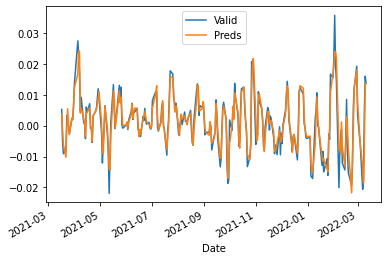
We’re back! 🥳
It’s not perfect, but we got something. And we can work with something. We can work with something… :)
Self-exercise: Validat how
rollingwould affect our non-history-based forecasting
Let’s reverse our transformation to see what we’d actually predict in the end.
y_rolling = df['GOOGL'].rolling(3).mean().dropna()
y_train_non_scaled, y_valid_non_scaled = train_test_split(y_rolling, test_size=0.2, shuffle=False)clf = RandomForestRegressor()
clf.fit(X_train, y_train)
preds = clf.predict(X_valid)
preds = (preds + 1).cumprod() # Cummulative multiplication, first day + 1%, but then we got -1%, that's 1.01 * 0.99
preds = preds * y_train_non_scaled.iloc[-1] # Scaling it up based on the last training value
pd.DataFrame({'Preds': preds, 'Valid Rolling': y_valid_non_scaled[1:], 'Valid': df['GOOGL'].iloc[-len(preds):]}).plot(backend='plotly')Show Plotly Chart (code cell only visible in active notebook)
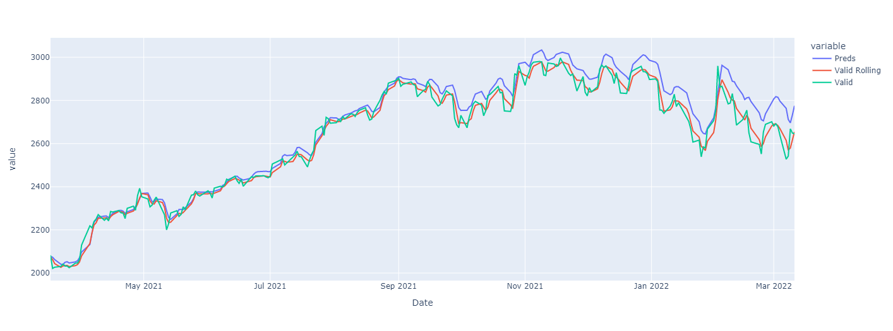Seems as we’re a little low in our predictions, but the curve is followed after all.
What issues are left?
- We are not using an
AutoRegressivemodel which might be interesting.
- More about this in the next session
- We are not using the “better” models, e.g. Neural Networks or statistic-model for Time Series like
ARIMA.
Personally I’m very pleased with the results and can’t wait to get started on part #3!
To learn more about Time Series and how one can analyze them please view the other parts,
- Part One - Decomposing & Working with Time Series (theoretical)
- Part Two - Predicting Stock Prices (Time Series) using classical Machine Learning
- Part Three -Forecasting Cryptocurrency Prices (Time Series) using Deep Learning (PyTorch, Tensorflow/Keras & darts)
Extra Self Exercises
- Try different window-sizes with
rolling - Try different length of history to predict new result on
- Test new architectures
- Find your own way to improve the results